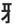
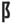

(fang)
+
(fang)
+  (town)
(town)
| JA |
Is it heretical to worship satan in Germany? JA!! |
|
In that town it is heresy to worship the fang. |
| 邪魔 します |
interrupt
★★★★☆
1/2 KANA
to interrupt. Often heard in the phrase: おじゃまします!('May I come in?') Used with co-workers or friends who are busy. Not used when you go to a store or someone's house. |
| 風邪 |
a common cold, the flu
★★★★☆
FP1/2 KANA
|
| Meaning | Hint | Radical | |
|---|---|---|---|
| 即 | immediately | FINGERPRINT | |
| 既 | already | FANG |  |
| 邪 | heresy | TOWN |  |
They FINGERPRINT you immediately because you already had FANGS.
In that TOWN fangs are a heresy!
| Meaning | Hint | Radical | |
|---|---|---|---|
| 邪 | heresy | TOWN | |
| 雅 | elegant | TURKEY |
In that TOWN, it's a heresy, to bring an elegant TURKEY to the prom.
 KANJIDAMAGE
KANJIDAMAGE